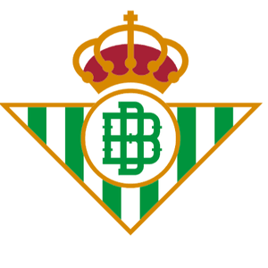

En la temporada 2021-22, el Betis consiguió el quinto puesto y un año más en la Europa League, mostrando un crecimiento constante con Pellegrini. El 23 de abril de 2022, el Betis ganó la final de la Copa del Rey contra el Valencia tras empatar 1-1 tras 120 minutos y ganar 5-4 en los penaltis.Esto va a ser en cursiva